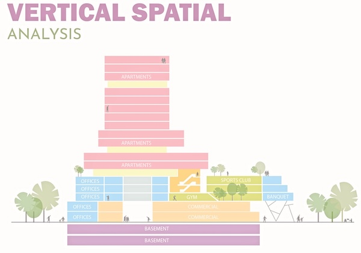
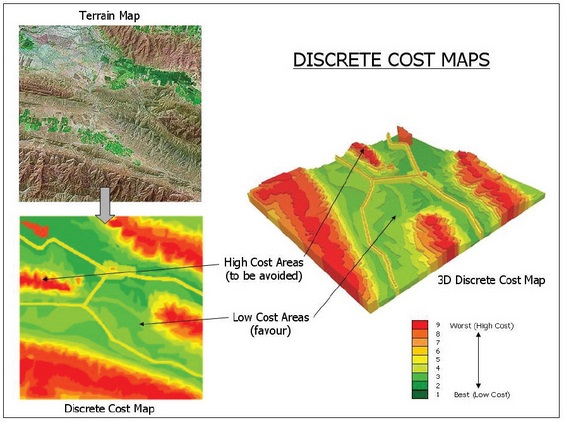

E6: Vertical and Hydrological Analysis#
Warm Up#
Why Do We Care About Slope?#
Is every 500-meter path equally difficult? Or does slope change everything?
As the following chart illustrates, many domains—from urban planning to emergency access—take slope and other vertical factors into account when designing spaces and systems.
This applies not only to outdoor environments like roads and trails, but also to vertical spatial planning within buildings, where elevation impacts accessibility, function, and design logic. For a deeper dive into how slope and vertical costs influence movement and analysis in GIS, you can explore this article:
How the horizontal and vertical factors affect path distance
Context |
Why Slope Matters |
|---|---|
🚲 Urban Planning |
Bike lanes avoid slopes >8% to stay rideable |
🚒 Emergency Access |
Fire trucks and ambulances struggle on steep roads |
⛷️ Ski Resorts |
Slope determines difficulty level (green/blue/black) |
🧱 Vertical Planning |
Vertical spatial design affects building function layering and elevation access |
🏗️ Construction |
Affects drainage, foundation design, and costs |
🚶 Accessibility |
Wheelchair paths require very gentle slopes |

Finding the “Best” Path — Is Shortest Always Best?#
“Why doesn’t Google Maps take me in a straight line?”
“Why can’t we just draw a line from A to B and walk it?”
Route Type |
What Happens |
Why |
|---|---|---|
🥾 Mountain Trails |
Zigzags instead of straight lines |
To avoid steep climbs |
🚗 City Driving |
Detours are often faster |
Due to traffic, turns, signals |
🦌 Animal Migration |
Never straight lines |
Optimized for safety, energy, terrain |
Key Concept: Shortest ≠ Optimal.
The “best” route often minimizes cost, not distance. Cost can mean:
Time
Energy (e.g. uphill walking)
Safety (avoiding cliffs or danger zones)
Environmental impact (avoiding protected areas)
Least Cost Path Analysis in GIS finds the route from start to end that has the lowest total cost — not just in meters, but factoring in terrain and other variables. 
Task#
In this exercise, you will explore vertical, hydrological, and cost surface analysis using raster data in ArcGIS Pro.
The goal is to understand how elevation and terrain influence visibility, water flow, and optimal routing decisions in mountainous regions.
Overview#
Vertical Analysis
visualize elevation, slope, aspect, and hypsometric tints in 3D scenes.
Line-of-Sight (Viewshed)
calculate visible areas from selected viewpoints using DEM.
Hydrological Analysis
compute flow direction, flow accumulation, and identify drainage basins.
Cost Surface Analysis
create a cost surface using slope and land cover data.
Least Cost Path
determine the optimal route between two points minimizing environmental and slope cost.
Descriptions & Steps#
Detailed instructions in Lesson 6
Data#
DEM_50m_Zugsp.tifLandCover.tif
1. Vertical Analysis#
Start a Local Scene in ArcGIS Pro.
Replace Esri’s default elevation with
DEM_50m_Zugsp.tifas the custom elevation source.Run the Slope and Aspect tools from the Spatial Analyst toolbox.
Generate a histogram of slope values.
Apply hypsometric tints using symbology with equal interval classification.
2. Line-of-Sight (Viewshed)#
Use the Viewshed tool to simulate line-of-sight from observer points.
Create points directly on the DEM within the local scene.
Analyze which areas are visible based on terrain.
3. Hydrological Analysis#
Run the following tools on the DEM:
Flow Direction (D8 method, force edges to flow outward)
Flow Accumulation
Basin tool to delineate drainage areas
Visualize drainage basins with unique colors and adjust transparency to overlay with flow accumulation.
4. Cost Surface Analysis#
Add
LandCover.tifand Reclassify land use values based on environmental impact.Optionally Reclassify slope values to match scale.
Combine reclassified rasters using the Plus tool to generate the cost surface.
5. Least Cost Path#
Change scene coordinate system to
WGS 1984 UTM Zone 32N.Use the Least Cost Path tool:
Input your combined cost surface
Create start and end points interactively
Generate the optimal hiking trail based on your criteria
Optional Task#
Explore elevation and hydrological analysis in your programming environment. You can start with these examples:
Build a simple web map or dashboard:
Use Leaflet.js, Mapbox, or Kepler.gl to visualize slope maps or flow paths.
Upload your cost surface and overlay the least cost path between two points.
Allow user-defined input: choose start/end point and display results dynamically.
💡 Tip: Libraries you may want to explore include:
rasterio, geopandas, matplotlib, richdem, whitebox, folium, pyproj, shapely, and networkx (for raster-to-network conversion).